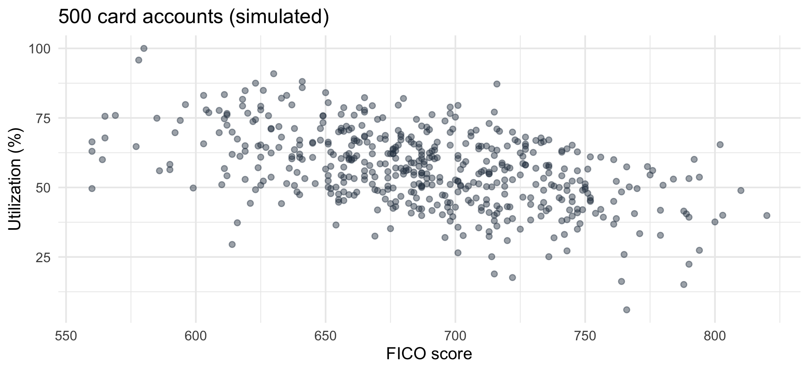
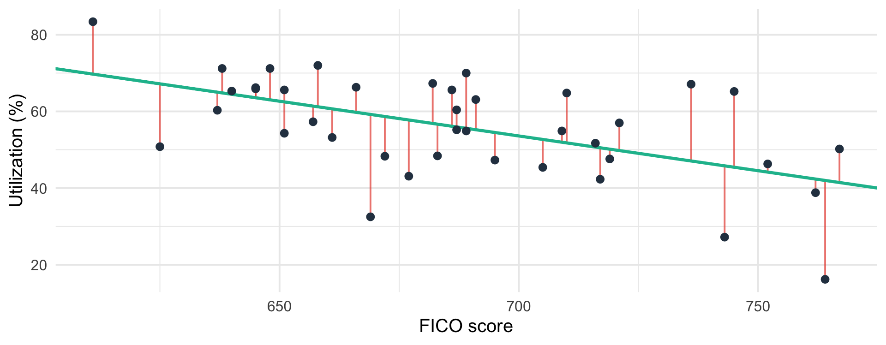

Two weeks ago, in Classwork 2-1, you computed a correlation between bank branches and denials.
Correlation answered: do they move together, and how tightly?
It could not answer: by how much?
If a borrower’s credit score were 50 points lower, how much more of their credit line would we expect them to be using?
That is a question about a slope. Regression is the tool that estimates slopes.
The job: Capital One, Card Credit Risk
You are an analyst on a credit card credit risk team. Your manager asks:
“How does credit utilization move with FICO score in our portfolio?”
Variable
Meaning
Units
util
Utilization: balance ÷ credit line
percent (0–100)
fico
FICO credit score at the last refresh
points (300–850)
High utilization is an early-warning sign: borrowers who max out their lines miss payments more often. If utilization tracks FICO, the team can watch lower-score accounts more closely and size credit-line increases more carefully.
The data are simulated: 500 made-up accounts. The setting is real; the numbers are not.
Look before you fit

Downward and noisy. A line will summarize the trend; it will not pass through the points.
Greek letters with no hat are the population truth: fixed, unknown. With a hat (\(\hat\beta_0, \hat\beta_1, \hat Y_i\)), they are estimates from our sample. R prints hats.
(b)\(62.15 - 48.25 = 13.9\) points lower, which is \(100 \times 0.139\). Slope × change in \(X\) = change in the prediction.
(c) Each additional FICO point is associated with 0.139 percentage points lower utilization, on average. (Equivalently: 1.39 points lower per 10 FICO points.)
(d) FICO scores start at 300, and no account in the data is near 0. The intercept anchors the height of the line; reading it literally is extrapolation.
Which line? Ordinary Least Squares

Each red segment is a residual: \(\hat u_i = Y_i - \hat Y_i\), the actual value minus the line’s prediction. OLS chooses the line that makes
\[
\sum_{i=1}^{n} \hat u_i^{\,2} = \sum_{i=1}^{n} \left(Y_i - \hat\beta_0 - \hat\beta_1 X_i\right)^2
\quad \textbf{as small as possible.}
\]
The slope is the sample covariance of \(X\) and \(Y\) divided by the sample variance of \(X\). You computed both in Classwork 2-1.
The intercept makes the line pass through the point of means \((\bar X, \bar Y)\). Every OLS line does.
Shorthand we’ll use all week: \(\;S_{xx} = \sum (X_i - \bar X)^2 \quad S_{xy} = \sum (X_i - \bar X)(Y_i - \bar Y)\), so \(\hat\beta_1 = S_{xy}/S_{xx}\).
You Try 2 — OLS by hand
Five accounts. \(X\) = missed payments in the last 12 months; \(Y\) = utilization (%).
Account
1
2
3
4
5
\(X_i\)
0
1
2
3
4
\(Y_i\)
30
38
52
58
72
(a) Compute \(\bar X\) and \(\bar Y\).
(b) Make a table with columns \(X_i - \bar X\), \(\;Y_i - \bar Y\), \(\;(X_i - \bar X)^2\), \(\;(X_i - \bar X)(Y_i - \bar Y)\). Sum the last two columns to get \(S_{xx}\) and \(S_{xy}\).
(c) Compute \(\hat\beta_1\) and \(\hat\beta_0\). Interpret \(\hat\beta_1\).
Solution 2
(a)\(\bar X = 10/5 = 2\) · \(\bar Y = 250/5 = 50\)
(d)\(R^2 = 1081.6 / 1096 = 0.9869\): missed payments explain about 98.7% of the variation in utilization across these five accounts.
\(SER = \sqrt{14.4 / (5 - 2)} = \sqrt{4.8} = 2.19\): the line typically misses by about 2.2 percentage points.
How sure are we about \(\hat\beta_1\)?
A different 500 accounts would give a different\(\hat\beta_1\). Like \(\bar Y\) on Day 4, \(\hat\beta_1\) is a random variable with a sampling distribution (S&W §4.5).
Its standard deviation is estimated by the standard error:
We wrote down the truth: \(\beta_0 = 160\), \(\beta_1 = -0.15\). Real data never tells you that. Simulated data does, so we can check whether OLS finds it.
You Try 4 — OLS by hand, in R
Complete the code. Then check it against lm().
x <- cards$ficoy <- cards$utilSxx <-sum((x -mean(x))^____)Sxy <-sum((x - ____) * (y - ____))b1 <- ____ / ____b0 <-mean(y) - ____ *mean(x)c(b0 = b0, b1 = b1)reg <-lm(util ~ fico, data = cards)coef(reg) # do they match?
How close is \(\hat\beta_1\) to the true \(-0.15\)? Should it be exact?
They match to every digit. And \(\hat\beta_1 \approx\) -0.139 is close to the truth, \(-0.15\), but not equal: that gap is sampling error.
You Try 5 — Sums of squares in R
yhat <-fitted(reg) # the line's predictionsuhat <-resid(reg) # the missesc(sum_u =sum(uhat), sum_xu =sum(x * uhat)) # the two OLS factsTSS <-sum((y -mean(y))^2)ESS <-sum((____ -mean(y))^2)SSR <-sum(____^2)c(TSS = TSS, ESS_plus_SSR = ESS + SSR) # should be equalR2 <- ____ / ____SER <-sqrt(____ / (length(y) - ____))c(R2 = R2, SER = SER)summary(reg) # find R2 and SER in the outputanova(reg) # find ESS and SSR in the output
TSS ESS SSR R2 SER
93307.917 22726.591 70581.326 0.244 11.905
anova(reg)
Analysis of Variance Table
Response: util
Df Sum Sq Mean Sq F value Pr(>F)
fico 1 22727 22726.6 160.35 < 2.2e-16 ***
Residuals 498 70581 141.7
---
Signif. codes: 0 '***' 0.001 '**' 0.01 '*' 0.05 '.' 0.1 ' ' 1
fico row, Sum Sq = ESS
Residuals row, Sum Sq = SSR
\(TSS\) = the two added together
ResidualsMean Sq\(= SSR/(n-2) = SER^2\)
You Try 6 — Make the slope bounce
The Std. Error claims to measure how much \(\hat\beta_1\) moves from sample to sample. Test that claim. Draw 1,000 new portfolios from the same truth, and re-estimate the slope each time.
set.seed(300)slopes <-replicate(1000, { fico <-round(pmin(pmax(rnorm(500, 690, 50), 560), 830)) util <-pmin(pmax(160-0.15* fico +rnorm(500, 0, 12), 0), 100)coef(lm(util ~ fico))[____] # which element is the slope?})c(mean_of_slopes =mean(____), sd_of_slopes =sd(____))coef(summary(reg))["fico", "Std. Error"] # what ONE sample estimatedhist(slopes, breaks =40)
(a) Is the average slope close to \(-0.15\)? (b) Is the SD of the slopes close to the Std. Error from our one sample?
Estimate Std. Error t value Pr(>|t|)
(Intercept) 152.0902960 7.54823437 20.14912 1.784765e-66
fico -0.1386405 0.01094846 -12.66301 4.690298e-32
Column
Symbol
Formula
Today?
Estimate
\(\hat\beta_j\)
\(S_{xy}/S_{xx}\); \(\;\bar Y - \hat\beta_1 \bar X\)
✓
Std. Error
\(SE(\hat\beta_j)\)
\(SER/\sqrt{S_{xx}}\) for the slope
✓
t value
\(t\)
\(\hat\beta_j / SE(\hat\beta_j)\)
Tuesday
Pr(>|t|)
\(p\)
area in the \(t\) tails
Tuesday
Day 5 on one page
Idea
What it says
Formula
Linear model
outcome = line + error
\(Y_i = \beta_0 + \beta_1 X_i + u_i\)
OLS
the line with the smallest squared misses
\(\min \sum \hat u_i^2\)
Slope
covariance over variance
\(\hat\beta_1 = S_{xy}/S_{xx}\)
Intercept
line passes through the means
\(\hat\beta_0 = \bar Y - \hat\beta_1 \bar X\)
OLS facts
residuals sum to 0, uncorrelated with \(X\)
\(\sum \hat u_i = 0,\ \sum X_i \hat u_i = 0\)
Sums of squares
variation splits exactly
\(TSS = ESS + SSR\)
\(R^2\)
share explained
\(ESS/TSS\)
SER
typical miss, in \(Y\) units
\(\sqrt{SSR/(n-2)}\)
\(SE(\hat\beta_1)\)
how much the slope bounces
\(SER/\sqrt{S_{xx}}\)
Assigned: Classwork 3-1. Questions 1–2 use only today’s material. Do them before Tuesday. Tuesday: t-tests, p-values, and the F-test, on JPMorgan loss data.
Appendix: the same thing in Python
OLS and sums of squares in Python
import numpy as npimport pandas as pdimport statsmodels.formula.api as smfrng = np.random.default_rng(1105)fico = np.clip(np.round(rng.normal(690, 50, 500)), 560, 830)util = np.clip(160-0.15* fico + rng.normal(0, 12, 500), 0, 100).round(1)cards = pd.DataFrame({"fico": fico, "util": util})# by handx, y = cards.fico, cards.utilb1 = ((x - x.mean()) * (y - y.mean())).sum() / ((x - x.mean())**2).sum()b0 = y.mean() - b1 * x.mean()# by statsmodels (the R lm() equivalent)reg = smf.ols("util ~ fico", data=cards).fit()reg.params # b0, b1reg.ess, reg.ssr # ESS and SSR -- statsmodels uses the S&W namesreg.rsquared # R^2np.sqrt(reg.mse_resid) # SERreg.bse # standard errors
Python’s random numbers differ from R’s even with the same seed, so the estimates will be close to the R ones but not identical.